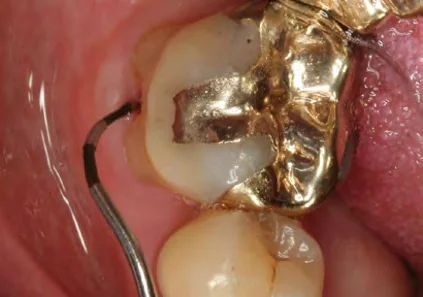

نسخه استخراجشده؛ ترجمه یا تأیید علمی انجام نشده است. وضعیت: captured
| درجه گلیکمن | رویکرد اصلی |
|---|---|
| I (ابتدایی، پروب وارد نمیشود) | 🟢 دبریدمان غیرجراحی و کنترل پلاک؛ اغلب کافی است |
| II (بنبست، نفوذ ناقص) | 🟡 اودونتوپلاستی، بازسازی (بهترین اندیکاسیون GTR در فورکیشن)، یا فلپ دسترسی |
| III (سرتاسری، پوشیده از لثه) | 🔴 تونلسازی، رزکشن ریشه، همیسکشن، یا کشیدن |
| IV (سرتاسری و قابل مشاهده) | 🔴 همان گزینههای درجه III؛ اغلب کشیدن |
🔑 خط تقسیم اصلی، مرز درجه II و III است. در درجه II هنوز دیواره استخوانی و فضای محصور وجود دارد، پس بازسازی معنا دارد. در درجه III سرتاسری، فضای محصوری برای حفظ لخته نیست و رویکرد به سمت رزکتیو یا حذف میرود.

تراشیدن و شکلدهی خود دندان — نه استخوان — برای پهن کردن دهانه فورکیشن و ایجاد کانتور قابل تمیز کردن.
⚠️ محدودیت جدی: خطر نزدیک شدن به پالپ و ایجاد حساسیت. ضخامت باقیمانده عاج را باید پیوسته ارزیابی کنی.
باز کردن کامل ناحیه فورکیشن تا بیمار بتواند با برس بیندندانی از آن عبور کند.
| مناسب برای | خطر اصلی |
|---|---|
| فورکیشن درجه III با تنه ریشه کوتاه و واگرایی خوب ریشهها — اغلب مولر اول فک پایین | 🔴 پوسیدگی ریشه در ناحیه فورکیشن — شایعترین و جدیترین عارضه |
⚠️ به همین دلیل، تونلسازی نیازمند بیمار با کنترل پلاک بسیار عالی و برنامه فلوراید و پایش منظم است. در بیمار با خطر پوسیدگی بالا، انتخاب نامناسبی است.
برداشتن یک ریشه با حفظ کل تاج.
کاندید ایدهآل: مولر فک بالا با یک ریشه دچار تحلیل شدید و دو ریشه دیگر با حمایت خوب — اغلب ریشه دیستوباکال برداشته میشود.
پیشنیاز حیاتی: 🔑 درمان ریشه پیش از عمل — یا دستکم برنامه قطعی برای آن. ریشه بریدهشده، پالپ را باز میگذارد.
ملاحظه پروتزی: پس از رزکشن، تاج بدون حمایت کامل میماند و اغلب به روکش نیاز دارد.
تقسیم دندان دوریشهای — عمدتاً مولر فک پایین — به دو نیمه.
یک نیمه کشیده میشود و نیمه دیگر بهعنوان یک دندان تکریشهای حفظ میشود.
یا هر دو نیمه حفظ و بهصورت دو پرهمولر بازسازی میشوند.
پیشنیاز: درمان ریشه، حمایت استخوانی کافی برای نیمه باقیمانده، و طرح پروتزی روشن.
درجه درگیری چیست؟ — I و II مسیر حفظ؛ III و IV مسیر رزکتیو یا حذف.
آناتومی اجازه میدهد؟ — تنه ریشه، واگرایی ریشهها، طول و شکل ریشهها.
حمایت استخوانی هر ریشه چقدر است؟ — ریشهای که خودش حمایت کافی ندارد، نمیتواند بار تاج را بردارد.
کنترل پلاک بیمار و خطر پوسیدگی او چگونه است؟ — تعیینکننده امکان تونلسازی.
| یافته | پیامد |
|---|---|
| درگیری فورکیشن بهتنهایی | پیشآگهی دندان را بهطور معناداری بدتر میکند |
| دندان با رزکشن ریشه | نرخ عوارض بالاتر: 🔴 شکست ریشه، پوسیدگی، شکست اندودنتیک، مشکلات پروتزی |
| تونلسازی | 🔴 نرخ بالای پوسیدگی ریشه در پایش بلندمدت |
| ایمپلنت بهعنوان جایگزین | در بسیاری موارد پیشآگهی قابل پیشبینیتری دارد |
🔑 مهمترین تصمیم بالینی این درس: در فورکیشن درجه III و IV، باید صادقانه بپرسی آیا تلاشهای پیچیده حفظ دندان — با نرخ عوارض بالا و هزینه و زمان زیاد — واقعاً بهتر از کشیدن و ایمپلنت است. پاسخ به شرایط فردی بیمار بستگی دارد، اما نگه داشتن دندان به هر قیمتی، همیشه انتخاب درست نیست.
⚠️ در این گفتوگو، اطلاعات کامل — شامل نرخ عوارض، تعداد جلسات، هزینه و گزینه جایگزین — باید در اختیار بیمار قرار گیرد. این یک تصمیم مشترک است.
⚠️ اشتباه رایج ۱: بهترین اندیکاسیون بازسازی در فورکیشن، درجه II است.
⚠️ اشتباه رایج ۲: شایعترین عارضه تونلسازی، پوسیدگی ریشه است.
⚠️ اشتباه رایج ۳: رزکشن ریشه و همیسکشن نیازمند درمان ریشه و طرح پروتزیاند.
نوع سؤال: ساخت کلمه · 8 خانه
حروف منبع: ی · و · ش · ر · ه · ی · ا · د